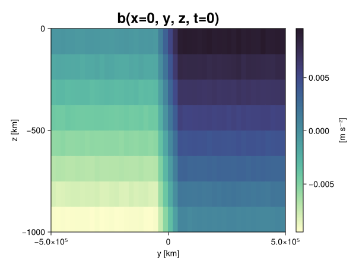
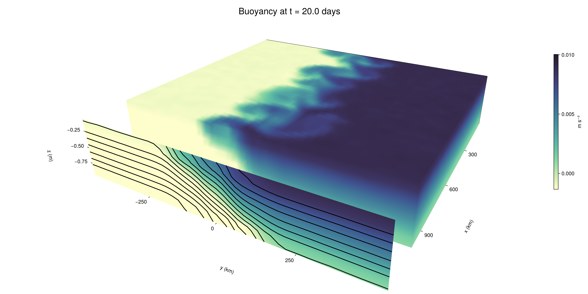

Baroclinic adjustment
In this example, we simulate the evolution and equilibration of a baroclinically unstable front.
Install dependencies
First let's make sure we have all required packages installed.
using Pkg
pkg"add Oceananigans, CairoMakie"using Oceananigans
using Oceananigans.UnitsGrid
We use a three-dimensional channel that is periodic in the x direction:
Lx = 1000kilometers # east-west extent [m]
Ly = 1000kilometers # north-south extent [m]
Lz = 1kilometers # depth [m]
grid = RectilinearGrid(size = (48, 48, 8),
x = (0, Lx),
y = (-Ly/2, Ly/2),
z = (-Lz, 0),
topology = (Periodic, Bounded, Bounded))48×48×8 RectilinearGrid{Float64, Periodic, Bounded, Bounded} on CPU with 3×3×3 halo
├── Periodic x ∈ [0.0, 1.0e6) regularly spaced with Δx=20833.3
├── Bounded y ∈ [-500000.0, 500000.0] regularly spaced with Δy=20833.3
└── Bounded z ∈ [-1000.0, 0.0] regularly spaced with Δz=125.0Model
We built a HydrostaticFreeSurfaceModel with an ImplicitFreeSurface solver. Regarding Coriolis, we use a beta-plane centered at 45° South.
model = HydrostaticFreeSurfaceModel(; grid,
coriolis = BetaPlane(latitude = -45),
buoyancy = BuoyancyTracer(),
tracers = :b,
momentum_advection = WENO(),
tracer_advection = WENO())HydrostaticFreeSurfaceModel{CPU, RectilinearGrid}(time = 0 seconds, iteration = 0)
├── grid: 48×48×8 RectilinearGrid{Float64, Periodic, Bounded, Bounded} on CPU with 3×3×3 halo
├── timestepper: QuasiAdamsBashforth2TimeStepper
├── tracers: b
├── closure: Nothing
├── buoyancy: BuoyancyTracer with ĝ = NegativeZDirection()
├── free surface: ImplicitFreeSurface with gravitational acceleration 9.80665 m s⁻²
│ └── solver: FFTImplicitFreeSurfaceSolver
├── advection scheme:
│ ├── momentum: WENO reconstruction order 5
│ └── b: WENO reconstruction order 5
└── coriolis: BetaPlane{Float64}We start our simulation from rest with a baroclinically unstable buoyancy distribution. We use ramp(y, Δy), defined below, to specify a front with width Δy and horizontal buoyancy gradient M². We impose the front on top of a vertical buoyancy gradient N² and a bit of noise.
"""
ramp(y, Δy)
Linear ramp from 0 to 1 between -Δy/2 and +Δy/2.
For example:
```
y < -Δy/2 => ramp = 0
-Δy/2 < y < -Δy/2 => ramp = y / Δy
y > Δy/2 => ramp = 1
```
"""
ramp(y, Δy) = min(max(0, y/Δy + 1/2), 1)
N² = 1e-5 # [s⁻²] buoyancy frequency / stratification
M² = 1e-7 # [s⁻²] horizontal buoyancy gradient
Δy = 100kilometers # width of the region of the front
Δb = Δy * M² # buoyancy jump associated with the front
ϵb = 1e-2 * Δb # noise amplitude
bᵢ(x, y, z) = N² * z + Δb * ramp(y, Δy) + ϵb * randn()
set!(model, b=bᵢ)Let's visualize the initial buoyancy distribution.
using CairoMakie
# Build coordinates with units of kilometers
x, y, z = 1e-3 .* nodes(grid, (Center(), Center(), Center()))
b = model.tracers.b
fig, ax, hm = heatmap(view(b, 1, :, :),
colormap = :deep,
axis = (xlabel = "y [km]",
ylabel = "z [km]",
title = "b(x=0, y, z, t=0)",
titlesize = 24))
Colorbar(fig[1, 2], hm, label = "[m s⁻²]")
fig
Simulation
Now let's build a Simulation.
simulation = Simulation(model, Δt=20minutes, stop_time=20days)Simulation of HydrostaticFreeSurfaceModel{CPU, RectilinearGrid}(time = 0 seconds, iteration = 0)
├── Next time step: 20 minutes
├── Elapsed wall time: 0 seconds
├── Wall time per iteration: NaN days
├── Stop time: 20 days
├── Stop iteration : Inf
├── Wall time limit: Inf
├── Callbacks: OrderedDict with 4 entries:
│ ├── stop_time_exceeded => Callback of stop_time_exceeded on IterationInterval(1)
│ ├── stop_iteration_exceeded => Callback of stop_iteration_exceeded on IterationInterval(1)
│ ├── wall_time_limit_exceeded => Callback of wall_time_limit_exceeded on IterationInterval(1)
│ └── nan_checker => Callback of NaNChecker for u on IterationInterval(100)
├── Output writers: OrderedDict with no entries
└── Diagnostics: OrderedDict with no entriesWe add a TimeStepWizard callback to adapt the simulation's time-step,
conjure_time_step_wizard!(simulation, IterationInterval(20), cfl=0.2, max_Δt=20minutes)Also, we add a callback to print a message about how the simulation is going,
using Printf
wall_clock = Ref(time_ns())
function print_progress(sim)
u, v, w = model.velocities
progress = 100 * (time(sim) / sim.stop_time)
elapsed = (time_ns() - wall_clock[]) / 1e9
@printf("[%05.2f%%] i: %d, t: %s, wall time: %s, max(u): (%6.3e, %6.3e, %6.3e) m/s, next Δt: %s\n",
progress, iteration(sim), prettytime(sim), prettytime(elapsed),
maximum(abs, u), maximum(abs, v), maximum(abs, w), prettytime(sim.Δt))
wall_clock[] = time_ns()
return nothing
end
add_callback!(simulation, print_progress, IterationInterval(100))Diagnostics/Output
Here, we save the buoyancy, $b$, at the edges of our domain as well as the zonal ($x$) average of buoyancy.
u, v, w = model.velocities
ζ = ∂x(v) - ∂y(u)
B = Average(b, dims=1)
U = Average(u, dims=1)
V = Average(v, dims=1)
filename = "baroclinic_adjustment"
save_fields_interval = 0.5day
slicers = (east = (grid.Nx, :, :),
north = (:, grid.Ny, :),
bottom = (:, :, 1),
top = (:, :, grid.Nz))
for side in keys(slicers)
indices = slicers[side]
simulation.output_writers[side] = JLD2OutputWriter(model, (; b, ζ);
filename = filename * "_$(side)_slice",
schedule = TimeInterval(save_fields_interval),
overwrite_existing = true,
indices)
end
simulation.output_writers[:zonal] = JLD2OutputWriter(model, (; b=B, u=U, v=V);
filename = filename * "_zonal_average",
schedule = TimeInterval(save_fields_interval),
overwrite_existing = true)JLD2OutputWriter scheduled on TimeInterval(12 hours):
├── filepath: ./baroclinic_adjustment_zonal_average.jld2
├── 3 outputs: (b, u, v)
├── array type: Array{Float64}
├── including: [:grid, :coriolis, :buoyancy, :closure]
├── file_splitting: NoFileSplitting
└── file size: 30.7 KiBNow we're ready to run.
@info "Running the simulation..."
run!(simulation)
@info "Simulation completed in " * prettytime(simulation.run_wall_time)[ Info: Running the simulation...
[ Info: Initializing simulation...
[00.00%] i: 0, t: 0 seconds, wall time: 27.728 seconds, max(u): (0.000e+00, 0.000e+00, 0.000e+00) m/s, next Δt: 20 minutes
[ Info: ... simulation initialization complete (30.488 seconds)
[ Info: Executing initial time step...
[ Info: ... initial time step complete (22.141 seconds).
[06.94%] i: 100, t: 1.389 days, wall time: 41.876 seconds, max(u): (1.282e-01, 1.174e-01, 1.528e-03) m/s, next Δt: 20 minutes
[13.89%] i: 200, t: 2.778 days, wall time: 1.135 seconds, max(u): (2.183e-01, 1.733e-01, 1.895e-03) m/s, next Δt: 20 minutes
[20.83%] i: 300, t: 4.167 days, wall time: 1.216 seconds, max(u): (3.214e-01, 2.532e-01, 1.899e-03) m/s, next Δt: 20 minutes
[27.78%] i: 400, t: 5.556 days, wall time: 1.167 seconds, max(u): (3.859e-01, 3.324e-01, 2.038e-03) m/s, next Δt: 20 minutes
[34.72%] i: 500, t: 6.944 days, wall time: 1.144 seconds, max(u): (4.854e-01, 4.999e-01, 2.112e-03) m/s, next Δt: 20 minutes
[41.67%] i: 600, t: 8.333 days, wall time: 1.210 seconds, max(u): (6.293e-01, 7.475e-01, 2.921e-03) m/s, next Δt: 20 minutes
[48.61%] i: 700, t: 9.722 days, wall time: 1.173 seconds, max(u): (8.336e-01, 1.127e+00, 4.083e-03) m/s, next Δt: 20 minutes
[55.56%] i: 800, t: 11.111 days, wall time: 1.150 seconds, max(u): (1.284e+00, 1.135e+00, 4.647e-03) m/s, next Δt: 20 minutes
[62.50%] i: 900, t: 12.500 days, wall time: 1.118 seconds, max(u): (1.454e+00, 1.119e+00, 5.580e-03) m/s, next Δt: 20 minutes
[69.44%] i: 1000, t: 13.889 days, wall time: 1.144 seconds, max(u): (1.382e+00, 1.130e+00, 3.904e-03) m/s, next Δt: 20 minutes
[76.39%] i: 1100, t: 15.278 days, wall time: 1.118 seconds, max(u): (1.324e+00, 9.222e-01, 3.229e-03) m/s, next Δt: 20 minutes
[83.33%] i: 1200, t: 16.667 days, wall time: 1.092 seconds, max(u): (1.297e+00, 8.792e-01, 2.070e-03) m/s, next Δt: 20 minutes
[90.28%] i: 1300, t: 18.056 days, wall time: 1.108 seconds, max(u): (1.410e+00, 1.061e+00, 2.677e-03) m/s, next Δt: 20 minutes
[97.22%] i: 1400, t: 19.444 days, wall time: 1.116 seconds, max(u): (1.313e+00, 1.288e+00, 2.875e-03) m/s, next Δt: 20 minutes
[ Info: Simulation is stopping after running for 1.219 minutes.
[ Info: Simulation time 20 days equals or exceeds stop time 20 days.
[ Info: Simulation completed in 1.220 minutes
Visualization
All that's left is to make a pretty movie. Actually, we make two visualizations here. First, we illustrate how to make a 3D visualization with Makie's Axis3 and Makie.surface. Then we make a movie in 2D. We use CairoMakie in this example, but note that using GLMakie is more convenient on a system with OpenGL, as figures will be displayed on the screen.
using CairoMakieThree-dimensional visualization
We load the saved buoyancy output on the top, north, and east surface as FieldTimeSerieses.
filename = "baroclinic_adjustment"
sides = keys(slicers)
slice_filenames = NamedTuple(side => filename * "_$(side)_slice.jld2" for side in sides)
b_timeserieses = (east = FieldTimeSeries(slice_filenames.east, "b"),
north = FieldTimeSeries(slice_filenames.north, "b"),
top = FieldTimeSeries(slice_filenames.top, "b"))
B_timeseries = FieldTimeSeries(filename * "_zonal_average.jld2", "b")
times = B_timeseries.times
grid = B_timeseries.grid48×48×8 RectilinearGrid{Float64, Periodic, Bounded, Bounded} on CPU with 3×3×3 halo
├── Periodic x ∈ [0.0, 1.0e6) regularly spaced with Δx=20833.3
├── Bounded y ∈ [-500000.0, 500000.0] regularly spaced with Δy=20833.3
└── Bounded z ∈ [-1000.0, 0.0] regularly spaced with Δz=125.0We build the coordinates. We rescale horizontal coordinates to kilometers.
xb, yb, zb = nodes(b_timeserieses.east)
xb = xb ./ 1e3 # convert m -> km
yb = yb ./ 1e3 # convert m -> km
Nx, Ny, Nz = size(grid)
x_xz = repeat(x, 1, Nz)
y_xz_north = y[end] * ones(Nx, Nz)
z_xz = repeat(reshape(z, 1, Nz), Nx, 1)
x_yz_east = x[end] * ones(Ny, Nz)
y_yz = repeat(y, 1, Nz)
z_yz = repeat(reshape(z, 1, Nz), grid.Ny, 1)
x_xy = x
y_xy = y
z_xy_top = z[end] * ones(grid.Nx, grid.Ny)Then we create a 3D axis. We use zonal_slice_displacement to control where the plot of the instantaneous zonal average flow is located.
fig = Figure(size = (1600, 800))
zonal_slice_displacement = 1.2
ax = Axis3(fig[2, 1],
aspect=(1, 1, 1/5),
xlabel = "x (km)",
ylabel = "y (km)",
zlabel = "z (m)",
xlabeloffset = 100,
ylabeloffset = 100,
zlabeloffset = 100,
limits = ((x[1], zonal_slice_displacement * x[end]), (y[1], y[end]), (z[1], z[end])),
elevation = 0.45,
azimuth = 6.8,
xspinesvisible = false,
zgridvisible = false,
protrusions = 40,
perspectiveness = 0.7)Axis3()We use data from the final savepoint for the 3D plot. Note that this plot can easily be animated by using Makie's Observable. To dive into Observables, check out Makie.jl's Documentation.
n = length(times)41Now let's make a 3D plot of the buoyancy and in front of it we'll use the zonally-averaged output to plot the instantaneous zonal-average of the buoyancy.
b_slices = (east = interior(b_timeserieses.east[n], 1, :, :),
north = interior(b_timeserieses.north[n], :, 1, :),
top = interior(b_timeserieses.top[n], :, :, 1))
# Zonally-averaged buoyancy
B = interior(B_timeseries[n], 1, :, :)
clims = 1.1 .* extrema(b_timeserieses.top[n][:])
kwargs = (colorrange=clims, colormap=:deep, shading=NoShading)
surface!(ax, x_yz_east, y_yz, z_yz; color = b_slices.east, kwargs...)
surface!(ax, x_xz, y_xz_north, z_xz; color = b_slices.north, kwargs...)
surface!(ax, x_xy, y_xy, z_xy_top; color = b_slices.top, kwargs...)
sf = surface!(ax, zonal_slice_displacement .* x_yz_east, y_yz, z_yz; color = B, kwargs...)
contour!(ax, y, z, B; transformation = (:yz, zonal_slice_displacement * x[end]),
levels = 15, linewidth = 2, color = :black)
Colorbar(fig[2, 2], sf, label = "m s⁻²", height = Relative(0.4), tellheight=false)
title = "Buoyancy at t = " * string(round(times[n] / day, digits=1)) * " days"
fig[1, 1:2] = Label(fig, title; fontsize = 24, tellwidth = false, padding = (0, 0, -120, 0))
rowgap!(fig.layout, 1, Relative(-0.2))
colgap!(fig.layout, 1, Relative(-0.1))
save("baroclinic_adjustment_3d.png", fig)
Two-dimensional movie
We make a 2D movie that shows buoyancy $b$ and vertical vorticity $ζ$ at the surface, as well as the zonally-averaged zonal and meridional velocities $U$ and $V$ in the $(y, z)$ plane. First we load the FieldTimeSeries and extract the additional coordinates we'll need for plotting
ζ_timeseries = FieldTimeSeries(slice_filenames.top, "ζ")
U_timeseries = FieldTimeSeries(filename * "_zonal_average.jld2", "u")
B_timeseries = FieldTimeSeries(filename * "_zonal_average.jld2", "b")
V_timeseries = FieldTimeSeries(filename * "_zonal_average.jld2", "v")
xζ, yζ, zζ = nodes(ζ_timeseries)
yv = ynodes(V_timeseries)
xζ = xζ ./ 1e3 # convert m -> km
yζ = yζ ./ 1e3 # convert m -> km
yv = yv ./ 1e3 # convert m -> km49-element Vector{Float64}:
-500.0
-479.1666666666667
-458.3333333333333
-437.5
-416.6666666666667
-395.8333333333333
-375.0
-354.1666666666667
-333.3333333333333
-312.5
-291.6666666666667
-270.8333333333333
-250.0
-229.16666666666666
-208.33333333333334
-187.5
-166.66666666666666
-145.83333333333334
-125.0
-104.16666666666667
-83.33333333333333
-62.5
-41.666666666666664
-20.833333333333332
0.0
20.833333333333332
41.666666666666664
62.5
83.33333333333333
104.16666666666667
125.0
145.83333333333334
166.66666666666666
187.5
208.33333333333334
229.16666666666666
250.0
270.8333333333333
291.6666666666667
312.5
333.3333333333333
354.1666666666667
375.0
395.8333333333333
416.6666666666667
437.5
458.3333333333333
479.1666666666667
500.0Next, we set up a plot with 4 panels. The top panels are large and square, while the bottom panels get a reduced aspect ratio through rowsize!.
set_theme!(Theme(fontsize=24))
fig = Figure(size=(1800, 1000))
axb = Axis(fig[1, 2], xlabel="x (km)", ylabel="y (km)", aspect=1)
axζ = Axis(fig[1, 3], xlabel="x (km)", ylabel="y (km)", aspect=1, yaxisposition=:right)
axu = Axis(fig[2, 2], xlabel="y (km)", ylabel="z (m)")
axv = Axis(fig[2, 3], xlabel="y (km)", ylabel="z (m)", yaxisposition=:right)
rowsize!(fig.layout, 2, Relative(0.3))To prepare a plot for animation, we index the timeseries with an Observable,
n = Observable(1)
b_top = @lift interior(b_timeserieses.top[$n], :, :, 1)
ζ_top = @lift interior(ζ_timeseries[$n], :, :, 1)
U = @lift interior(U_timeseries[$n], 1, :, :)
V = @lift interior(V_timeseries[$n], 1, :, :)
B = @lift interior(B_timeseries[$n], 1, :, :)Observable([-0.009360121142322824 -0.008122583552996188 -0.006865386202677804 -0.0056417002950560615 -0.004397246354757061 -0.0031212286616864853 -0.0018621309397624226 -0.0006324930260532619; -0.009381707383240994 -0.008150470112978148 -0.0069016486374902 -0.005616766432081203 -0.004361904479291376 -0.0030995487526258203 -0.0018524601052154303 -0.0006032479948737433; -0.009378817648936626 -0.008088534057090077 -0.006893647139316561 -0.005650115364429495 -0.004359115695943365 -0.0031352555627066035 -0.0018631904217402877 -0.0006455307666707592; -0.00935965989263899 -0.008127459857875786 -0.006869629750289742 -0.005625069352036923 -0.00434614605900026 -0.003122607342647431 -0.00188058487798653 -0.0006384954602828601; -0.009395100671969603 -0.008124192272944515 -0.006887814627166156 -0.005609783056727327 -0.004361428747293627 -0.003118968629333377 -0.0018840071835253428 -0.0006512481486736117; -0.009386071230686287 -0.008122529343757309 -0.006856002873786868 -0.005636452898606869 -0.0043697221156845595 -0.003129993656314538 -0.0018887567483654233 -0.0006403537240474567; -0.009361247612255126 -0.008130660707603519 -0.006885741165321935 -0.005614672120706166 -0.004353816083801895 -0.0031507235446026145 -0.0018919534347715521 -0.0006180226484931436; -0.00936980964539359 -0.008131035697280183 -0.006870012803274872 -0.005636976561776318 -0.0043613527153331605 -0.003136828075951318 -0.001855414917271797 -0.0006137869775352842; -0.009363028247571497 -0.008123420417080009 -0.006890932818149797 -0.005606952397246977 -0.004388938854239926 -0.0031492330142817424 -0.0018716686253025326 -0.0006168754475591318; -0.009378135669034941 -0.00812548435844883 -0.006856210258849588 -0.005618158125069395 -0.004372230275851294 -0.0031177547021457017 -0.0018964484887520035 -0.0006207706076463982; -0.009372984203846094 -0.00813670712815483 -0.0068899638953489025 -0.005604616190706321 -0.004400539811164419 -0.0031103316026621954 -0.0018653735257339553 -0.0006207094930203257; -0.009382687061788348 -0.008128887570510447 -0.006882752309944015 -0.005644581553637804 -0.004355184600735454 -0.0031297182130813933 -0.0018754936559893494 -0.000626088380817359; -0.009377122385110683 -0.008098473407858792 -0.006873145751270601 -0.0056385093629632765 -0.0043797833825901114 -0.003122861285874655 -0.001880451707292838 -0.000641125963467201; -0.009382055024655627 -0.008122697143559225 -0.006870730634635461 -0.0056337715458366884 -0.00436586510794876 -0.003105673293529123 -0.0019047711497430682 -0.0006196857066105686; -0.009407401659078024 -0.008090171452627427 -0.006862350928638357 -0.0056196562046384214 -0.004365003238734158 -0.0031386524703224546 -0.0018756444945852513 -0.0006342548667927439; -0.009378050349211157 -0.008160219832768713 -0.0068614326447898645 -0.005613695932367861 -0.004377582206581812 -0.003134240092038488 -0.0018990492467167181 -0.0006002003186806786; -0.009377817115334024 -0.008127543153444085 -0.0068714945764074735 -0.005620046966999918 -0.004364204224170859 -0.003111342362235658 -0.0018723748225355872 -0.0006327949900391933; -0.00937053725888822 -0.008144516755020042 -0.006883770706849345 -0.005638437144659651 -0.004385855750888164 -0.0031447306459323754 -0.0018874622499049627 -0.0006376165617114659; -0.009364653176178466 -0.008125265438072925 -0.006866439310215571 -0.0056274135819298484 -0.004383342178384716 -0.003125099640470665 -0.0018646896864609255 -0.0006126262469511448; -0.009411733247950249 -0.00811557359238734 -0.006889293825894841 -0.005603491282232775 -0.0043544022057018785 -0.0030985927973575175 -0.001862280166153498 -0.000625396589581493; -0.00937812025335316 -0.008138348351207206 -0.006882546590715415 -0.0056331238248061915 -0.004377221296780764 -0.0031131877316896302 -0.0018824416699775952 -0.0006354013670778503; -0.009360098754505969 -0.008142709110275875 -0.00686395064163825 -0.005637584857284115 -0.004360159289611052 -0.0031162886098868026 -0.0018784560334532887 -0.0006039229112841733; -0.0074922801867726525 -0.006277086859891655 -0.005001734757209646 -0.0037270833757641433 -0.002506379070025423 -0.001238069695532901 -1.2573281639016582e-5 0.0012480865131288303; -0.005428452192897788 -0.004175526392764876 -0.0029012527736862006 -0.0016326691219138295 -0.000412044142713462 0.0008422557184659726 0.0020799320944818764 0.0033314893327254097; -0.00333046717262565 -0.002071583038136616 -0.0008331832228332354 0.0004101279108761384 0.0016629893574609284 0.002907280716781941 0.004179940391559673 0.005452408234708744; -0.0012097504847544747 -9.939382203318047e-7 0.001251098103762395 0.002503351503005128 0.0037582485343300143 0.004998736707007349 0.006234466906244098 0.0074944477161886505; 0.0006402516623456165 0.001910721586349636 0.003118569276004376 0.004389483092718459 0.005644123907650812 0.00687891468028846 0.008129249753594268 0.009391365108270247; 0.0006399757098631073 0.0018690399910538287 0.003111133340183868 0.004383207158055868 0.005616610878490345 0.006894393871344301 0.008116568712574886 0.009376759686096683; 0.0006086138441449541 0.0018819308778460248 0.003106984134562603 0.004359030794666982 0.005602487747364759 0.00687731633628805 0.008133754284041539 0.009374175733637078; 0.0006278245943954003 0.0018659616382160505 0.0031308391809777556 0.004392080385113075 0.005633768165267225 0.0068656104565132875 0.008135157640414913 0.009380734858639361; 0.000607255143522831 0.0018739518942712835 0.003135122777839202 0.00439555322495393 0.005630292774583573 0.006883398147130769 0.008104509397027839 0.009364812324354621; 0.0006097061797755179 0.0018779688432476167 0.0031332740215775125 0.004354084990473808 0.005610609930176023 0.006871885696370632 0.008108015125559467 0.009388307732286232; 0.0006442161687372495 0.0018357061942331314 0.0031148314122473853 0.0043806174962941384 0.005637173694483011 0.006881053729489016 0.008127140917817475 0.009382420331635792; 0.000636136058301301 0.0018457470402382346 0.0031475512031079998 0.00437367521803952 0.005641459200171115 0.00688353134257545 0.008148376539052163 0.009371635298212963; 0.0006829897208772674 0.0018676038590921661 0.003137808077505353 0.004371528963654643 0.005631457696042202 0.0068656210771279105 0.008092102478049396 0.009408794724481376; 0.0006316005848388373 0.0018790615042936255 0.00313784528173129 0.004379795473075738 0.005619258786735453 0.0068927135016720355 0.008122116400196758 0.009368616851975112; 0.0006100853883109717 0.0018929407563790229 0.003122426784246801 0.004376203691416354 0.005631131795764011 0.0068633728798063185 0.008123772839367232 0.009365284219298343; 0.0006391394203219856 0.0018960614474993163 0.003125481213229616 0.004367696635927384 0.0056394497688765114 0.00687813658515563 0.008142779475375778 0.009364019179025232; 0.0006315054188880516 0.0018831477303080906 0.0031270639460417066 0.004388312687349287 0.005640534843062139 0.006883130874820294 0.008127305638392522 0.009376301762770697; 0.0006236334675176394 0.001862356305821053 0.0031350713631656045 0.004390847496100463 0.005619981635480247 0.006857873711083817 0.008112012004278352 0.00937451122679302; 0.0005995003226286909 0.0018465344754950933 0.003144690500616703 0.004370027050642733 0.0056183885413771464 0.006856209458566328 0.008129581435826682 0.009373642070288008; 0.0006414246105033611 0.0018534385439429762 0.0031400077399662083 0.004375711155609474 0.0056384179511826575 0.0068493508844251925 0.008126670278001822 0.009357164222128747; 0.0006230414566025345 0.0018698887038113502 0.0031398722179921327 0.004383147963118363 0.005640348843561317 0.006872770403815706 0.008107323961672826 0.009358582933375182; 0.0006284876940926869 0.0018673479980706182 0.003138523650374548 0.0043577984706239204 0.005615874550903111 0.006883080667289744 0.008109587258047304 0.00938196277055408; 0.0006389858367507936 0.0018807632442376092 0.0031179987695112606 0.004349622220373037 0.00564180927648756 0.006867917812870768 0.00814062841527488 0.009366450155836847; 0.000625185254659635 0.0018938106953492277 0.0031294805597300544 0.004380736781507663 0.005612956345636675 0.006884405250640688 0.008136690162826008 0.009374197539841195; 0.0006165849078619547 0.0018771100403422558 0.0031238651987059393 0.0043809777729323955 0.005622832918598772 0.006883446647859 0.008140491330034869 0.009395064810520248; 0.0006286591475841416 0.0018639017328723542 0.003148506433186748 0.004362711043008118 0.005620520726448585 0.006881013524275764 0.008110164313263809 0.009385582570908811])
and then build our plot:
hm = heatmap!(axb, xb, yb, b_top, colorrange=(0, Δb), colormap=:thermal)
Colorbar(fig[1, 1], hm, flipaxis=false, label="Surface b(x, y) (m s⁻²)")
hm = heatmap!(axζ, xζ, yζ, ζ_top, colorrange=(-5e-5, 5e-5), colormap=:balance)
Colorbar(fig[1, 4], hm, label="Surface ζ(x, y) (s⁻¹)")
hm = heatmap!(axu, yb, zb, U; colorrange=(-5e-1, 5e-1), colormap=:balance)
Colorbar(fig[2, 1], hm, flipaxis=false, label="Zonally-averaged U(y, z) (m s⁻¹)")
contour!(axu, yb, zb, B; levels=15, color=:black)
hm = heatmap!(axv, yv, zb, V; colorrange=(-1e-1, 1e-1), colormap=:balance)
Colorbar(fig[2, 4], hm, label="Zonally-averaged V(y, z) (m s⁻¹)")
contour!(axv, yb, zb, B; levels=15, color=:black)Finally, we're ready to record the movie.
frames = 1:length(times)
record(fig, filename * ".mp4", frames, framerate=8) do i
n[] = i
endThis page was generated using Literate.jl.